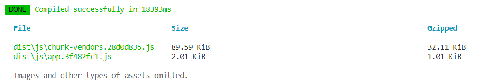
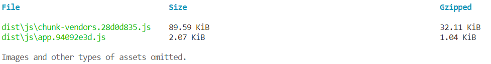
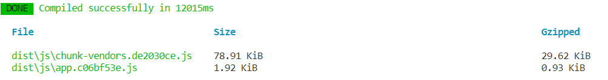
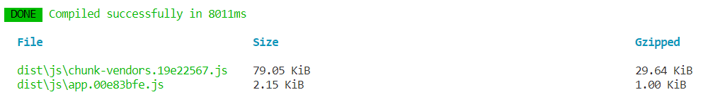

Vue 3.0中Treeshaking特性是什么，并举例进行说明？
参考答案
一、是什么
Tree shaking 是一种通过清除多余代码方式来优化项目打包体积的技术，专业术语叫 Dead code elimination
简单来讲，就是在保持代码运行结果不变的前提下，去除无用的代码
如果把代码打包比作制作蛋糕，传统的方式是把鸡蛋（带壳）全部丢进去搅拌，然后放入烤箱，最后把（没有用的）蛋壳全部挑选并剔除出去
而 treeshaking 则是一开始就把有用的蛋白蛋黄（import）放入搅拌，最后直接作出蛋糕
也就是说 ，tree shaking 其实是找出使用的代码
在Vue2中，无论我们使用什么功能，它们最终都会出现在生产代码中。主要原因是Vue实例在项目中是单例的，捆绑程序无法检测到该对象的哪些属性在代码中被使用到
import Vue from 'vue'
Vue.nextTick(() => {})而Vue3源码引入tree shaking特性，将全局 API 进行分块。如果您不使用其某些功能，它们将不会包含在您的基础包中
import { nextTick, observable } from 'vue'
nextTick(() => {})二、如何做
Tree shaking是基于ES6模板语法（import与export），主要是借助ES6模块的静态编译思想，在编译时就能确定模块的依赖关系，以及输入和输出的变量
Tree shaking无非就是做了两件事：
- 编译阶段利用
ES6 Module判断哪些模块已经加载 - 判断那些模块和变量未被使用或者引用，进而删除对应代码
下面就来举个例子：
通过脚手架vue-cli安装Vue2与Vue3项目
vue create vue-demoVue2 项目
组件中使用data属性
<script>
export default {
data: () => ({
count: 1,
}),
};
</script>对项目进行打包，体积如下图

为组件设置其他属性（compted、watch）
export default {
data: () => ({
question:"",
count: 1,
}),
computed: {
double: function () {
return this.count * 2;
},
},
watch: {
question: function (newQuestion, oldQuestion) {
this.answer = 'xxxx'
}
};再一次打包，发现打包出来的体积并没有变化

Vue3 项目
组件中简单使用
import { reactive, defineComponent } from "vue";
export default defineComponent({
setup() {
const state = reactive({
count: 1,
});
return {
state,
};
},
});将项目进行打包

在组件中引入computed和watch
import { reactive, defineComponent, computed, watch } from "vue";
export default defineComponent({
setup() {
const state = reactive({
count: 1,
});
const double = computed(() => {
return state.count * 2;
});
watch(
() => state.count,
(count, preCount) => {
console.log(count);
console.log(preCount);
}
);
return {
state,
double,
};
},
});再次对项目进行打包，可以看到在引入computer和watch之后，项目整体体积变大了

三、作用
通过Tree shaking，Vue3给我们带来的好处是：
- 减少程序体积（更小）
- 减少程序执行时间（更快）
- 便于将来对程序架构进行优化（更友好）
Tree shaking是一种通过消除多余代码来优化项目打包体积的技术，也称为Dead code elimination。它通过在编译阶段利用ES6模块的静态特性，识别并删除未被使用的代码。
Vue3引入了tree shaking特性，使得不使用的功能不会被包含在基础包中，从而减小项目体积和提高执行效率。
在Vue2中，所有功能无论是否使用都会出现在生产代码中，而Vue3则通过模块化实现了按需引入，减少了不必要的代码。
例如，在Vue3项目中，只有当实际使用到computed和watch等功能时，它们才会被包含在打包文件中，导致文件体积增加。
Tree shaking的作用主要包括减少程序体积、减少执行时间，以及对程序架构进行优化提供了便利。通过这种方式，Vue3为开发者带来了更高效、更友好的开发体验。